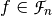
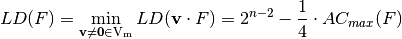
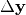
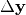
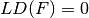
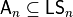
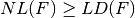
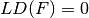
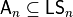
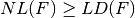

Linearity distance¶
Description¶
Functions with non-zero linear structures are considered weak functions from cryptanalytic viewpoint. It is our interest to identify strong Vector Boolean functions which are far from this weak functions. The cryptanalytic value of linear structures lies in their potential to map a nonlinear function to a degenerate function via a linear transformation, which may reduce the size of the keyspace.
S-boxes used in block ciphers should have no nonzero linear structures (see [Evertse:88]). The existence of nonzero linear structures, for the functions implemented in stream ciphers, is a potential risk that should also be avoided, despite the fact that such existence could not be used in attacks, so far.
The linearity distance of a Boolean function  is a characteristic defined by the distance to the set of all Boolean functions admitting nonzero linear structures. These include, among others, all the affine functions and all non bent quadratic functions and are defined as follows [MeierS:89]:

where:

Linearity distance of a Vector Boolean function, defined as the minimum among the linearity distances of all component functions of F, may be computed from the Autocorrelation Spectrum using [CarletBF:08]:

The differential cryptanalysis is based on the idea of finding high probable differentials pairs between the inputs and outputs of S-boxes present in the cipher, that is, finding S-boxes with low linearity distance. Differential cryptanalysis [BihamS:90] can be seen as an extension of the ideas of attacks based on the presence of linear structures [Nyberg:91]. If  is a linear structure of f, then the inputs of difference result in output differences of 1 or -1 with probability 1. In differential cryptanalysis,
it is only required that inputs of difference
is a linear structure of f, then the inputs of difference result in output differences of 1 or -1 with probability 1. In differential cryptanalysis,
it is only required that inputs of difference  lead to a known difference  with high probability, or with a probability that noticeably exceeds the mean. The perfect nonlinear functions are resistant to differential cryptanalysis.
lead to a known difference  with high probability, or with a probability that noticeably exceeds the mean. The perfect nonlinear functions are resistant to differential cryptanalysis.
Let  , if , it means that f has a nontrivial linear structure. As , then .
, if , it means that f has a nontrivial linear structure. As , then .
Library¶
The method used to obtain the linearity distance of a Vector Boolean function is the following:
void ld(NTL::RR& x, VBF& F)
The method used to the maximum linearity distance that can be achieved by a Vector Boolean function with the same number of input bits and output bits is the following:
NTL::RR ldmax(VBF& F)
Example¶
The following program provides the linearity distance of a Vector Boolean function given its Truth Table together with the maximum linearity distance that can be achieved by a Vector Boolean function with the same number of input bits and output bits.
#include <iostream>
#include <fstream>
#include "VBF.h"
int main(int argc, char *argv[])
{
using namespace VBFNS;
VBF F;
NTL::mat_GF2 T;
ifstream input(argv[1]);
if(!input) {
cerr << "Error opening " << argv[1] << endl;
return 0;
}
input >> T;
F.puttt(T);
input.close();
cout << "Linearity distance of the function is " << ld(F) << endl;
cout << "The maximum linearity distance: " << ldmax(F) << endl;
return 0;
}
If we use the NibbleSub S-box Truth Table as input, the output would be the following:
Linearity distance of the function is 0
This S-box has linear structures, and as a consequence, the distance to the set of all Boolean functions admitting nonzero linear structures is 0.